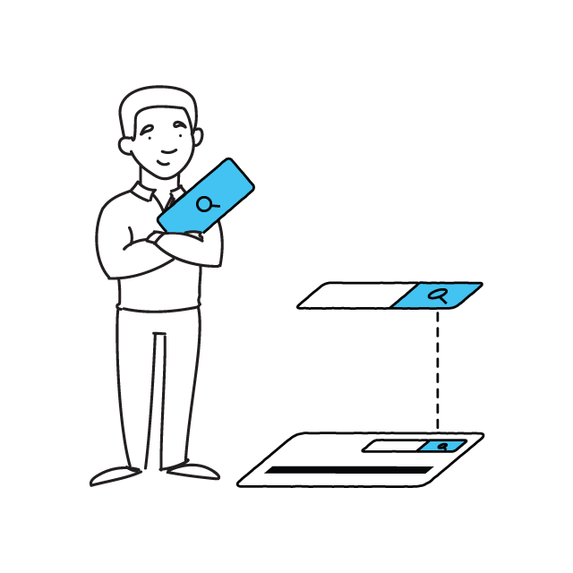

Home
The Australian Government Design System provides a framework and a set of tools to help designers and developers build government products and services more easily.
The system incorporates the highest usability and accessibility standards and helps deliver a consistent experience for all users, in line with the Digital Service Standard.

Community
The design system has been created for designers and developers across government to share and create a set of quality tools and designs that can be used by everyone.
- 
Components
Components can be used and extended by anyone to help kickstart the design and development process or even build production-ready interfaces.

Templates
Templates combine components to help you kickstart your project. They’ll save your team time and resources and help get value to your users sooner.
What is in our system
When you install a component you benefit from the shared efforts of a community dedicated to making government products and services better, faster, easier.
Designed
Deliver high-quality visual design
Modern
Built with HTML5 semantics
Responsive
Deliver mobile first responsive design
Tested
Usability tested by the community
Accessible
Meet WCAG 2.1 AA standard accessibility
Robust
Browser support back to IE8 and no-js fallbacks
Flexible
Include options for common JavaScript, jQuery and React
Customisable
Built on a detailed Sass ecosystem
Modular
Ability to choose the components you need
Versioned
Need upgrading only when you're ready
Maintained
Continuously improved
Supported
Empowered and driven by the community
Usage statistics
725
GitHub stars